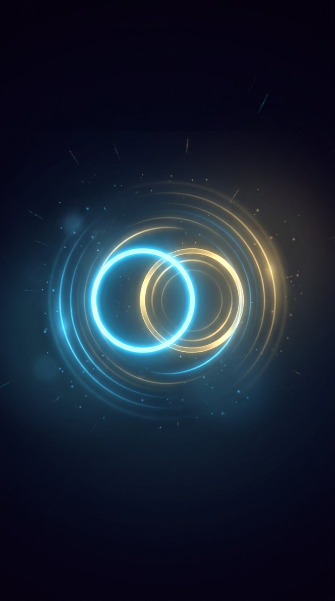

リズム
あそび
RHYTHM TIMING GAMES
タイミングを合わせる小さなゲームを
4つ
収録。
操作は
タップ
か
スペースキー
だけです。
はじめに音の遅れを合わせると、ぐっと押しやすくなります。
音ズレ設定
音ズレ調整
0
ms
端末ごとの音の遅れを補正します。ふつうは
自動計測
のままでOK。 手で微調整したいときだけ動かしてください。
音ズレを測りなおす
はじめる
ゲームをえらぶ
スコアを確認する
タイトルへ
スコアを確認する
みんなのランキング TOP10
読み込み中…
ゲームをえらぶへ
音ズレを合わせる
端末やイヤホンによって、音が耳に届くまでの
遅れ
はまちまちです。
ここを合わせておくと、ぐっと押しやすくなります。
かんたん設定
選ぶだけ・すぐ終わる
叩いて測る
最短6回・より正確
スキップ
音を聞く方法に近いものを選んでください。
有線イヤホン・ヘッドホン
ケーブルでつなぐタイプ
スマホ / PC の内蔵スピーカー
本体から音を出す
Bluetooth（ワイヤレス）
遅れが大きく出ます
あくまで目安の値です。ズレを感じたら「叩いて測る」か、タイトルの調整バーで直せます。
もどる
一定のリズムで音が鳴るので、
音に合わせてタップ
（またはスペースキー）してください。
正確さは気にせず、自然に合わせてください。
計測をはじめる
もどる
この設定で始める
やりなおす
ぴったりリング
SCORE
0
COMBO
0
BPM
0
はやい
ぴったり
おそい
重なった瞬間にタップ / スペース
まねっこリズム
SCORE
0
おてほん
あなた
ラウンド
1
/ 6
聴いたリズムをそのまま、タップ / スペースで
ぴったりストップ
SCORE
0
目標タイム
0.00
秒
0.00
よーい…
ラウンド
1
/ 5
ぴったりだと思った瞬間にタップ / スペース
A
PERFECT
0
GREAT
0
GOOD
0
MISS
0
SCORE
0
みんなのランキング TOP10
読み込み中…
TOP10入り！イニシャルを登録しよう
登録する
もういちど
ゲームをえらぶ